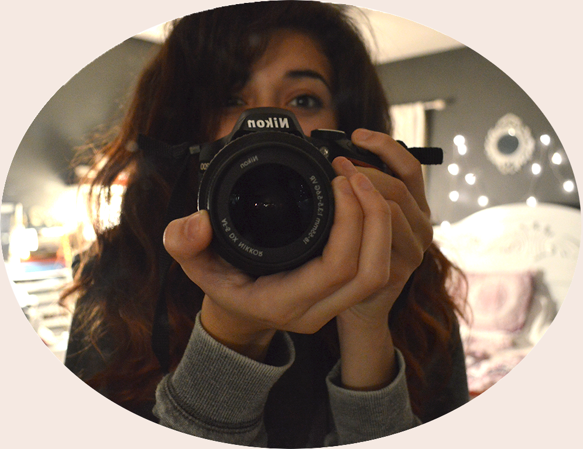

Full Name:
Jaynelle A. Aleman
Email:
jaynellealeman@gmail.com
About Me:
Hello! I am Jaynelle but I usually go by "Jay". I am a student at Valenica college currently majoring in Motion Graphics. I have been working with photoshop since I was 14 years old, mostly drawing art or editing my personal photgraphy. I love working with different mediums of art and once I had discovered graphic arts, I fell inlove with the endless ways to create whether it be hand drawn or painting or creating collages and much more. Although, recently I have taken a liking to web design because it is one big creative puzzle. I am excited to learn more and expand my artistic mediums.